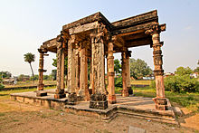
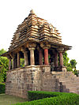
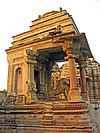
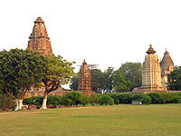
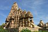
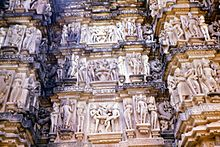
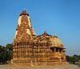
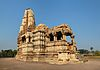
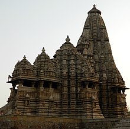
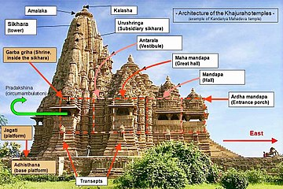

KHAJURAHO TEMPLES

Khajuraho has always been thought of as the place that exemplifies sensuality and eroticism at its best. However this is a misrepresentation as only about 10 percent of the sculptures are sensual and the rest are common depictions. Countless sculptures depicting love, eternal grace, beauty, delicacy and the creative arts can be seen in one of the most historical places in India. A perfect amalgamation of Hinduism and Jainism, these temples have carvings of cult icons, demi gods and Apsaras.
The Khajuraho Group of Monuments is a group of Hindu , Buddhist and Jain temples in Madhya Pradesh, India, about 175 kilometres (109 mi) southeast of Jhansi. They are one of the UNESCO World Heritage Sites in India. The temples are famous for their nagara-style architectural symbolism and their erotic sculptures.
Most Khajuraho temples were built between 950 and 1050 by the Chandela dynasty. Historical records note that the Khajuraho temple site had 85 temples by the 12th century, spread over 20 square kilometers Of these, only about 25 temples have survived, spread over 6 square kilometers. Of the various surviving temples, the Kandariya Mahadeva Temple is decorated with a profusion of sculptures with intricate details, symbolism and expressiveness of ancient Indian art.
The Khajuraho group of temples were built together but were dedicated to two religions, Hinduism and Jainism, suggesting a tradition of acceptance and respect for diverse religious views among Hindus and Jains in the region.
Location
The Khajuraho monuments are located in the Indian state of Madhya Pradesh, in Chhatarpur district, about 620 kilometres (385 mi) southeast of New Delhi.It is located The temples are near a small town also known as Khajuraho, with a population of about 20,000 people (2001 Census).
Khajuraho is served by Civil Aerodrome Khajuraho (IATA Code: HJR), with services to Delhi, Agra, Varanasi and Mumbai. The site is also linked by the Indian Railways service, with the railway station located approximately six kilometres from the entrance to the monuments .
The monuments are about 10 kilometres off the east-west National Highway 75, and about 50 kilometres from the city of Chhatarpur, which is connected to the state capital Bhopal by the SW-NE running National Highway 86.
The 10th century Bhand Deva Temple in Rajasthan was built in the style of the Khajuraho monuments and is often referred to as 'Little Khajuraho'.
Location
The Khajuraho monuments are located in the Indian state of Madhya Pradesh, in Chhatarpur district, about 620 kilometres (385 mi) southeast of New Delhi.It is located The temples are near a small town also known as Khajuraho, with a population of about 20,000 people (2001 Census).
Khajuraho is served by Civil Aerodrome Khajuraho (IATA Code: HJR), with services to Delhi, Agra, Varanasi and Mumbai. The site is also linked by the Indian Railways service, with the railway station located approximately six kilometres from the entrance to the monuments .
The monuments are about 10 kilometres off the east-west National Highway 75, and about 50 kilometres from the city of Chhatarpur, which is connected to the state capital Bhopal by the SW-NE running National Highway 86.
The 10th century Bhand Deva Temple in Rajasthan was built in the style of the Khajuraho monuments and is often referred to as 'Little Khajuraho'.
Description
The temple site is within Vindhya mountain range in central India. An ancient local legend held that Hindu deity Shiva and other gods enjoyed visiting the dramatic hill formation in Kalinjar area.[26] The center of this region is Khajuraho, set midst local hills and rivers. The temple complex reflects the ancient Hindu tradition of building temples where gods love to play.
The temples are clustered near water, another typical feature of Hindu temples. The current water bodies include Sib Sagar, Khajur Sagar (also called Ninora Tal) and Khudar Nadi (river). The local legends state that the temple complex had 64 water bodies, of which 56 have been physically identified by archeologists so far.
All temples, except[26] one (Chaturbhuja) face sunrise - another symbolic feature that is predominant in Hindu temples. The relative layout of temples integrate masculine and feminine deities and symbols highlight the interdependence. The art work symbolically highlight the four goals of life considered necessary and proper in Hinduism - dharma, kama, artha and moksha.
Of the surviving temples, 6 are dedicated to Shiva and his consorts, 8 to Vishnu and his affinities, 1 to Ganesha, 1 to Sun god, 3 to Jain Tirthankars. For some ruins, there is insufficient evidence to assign the temple to specific deities with confidence.
An overall examination of site suggests that the Hindu symbolic mandala design principle of square and circles is present each temple plan and design.Further, the territory is laid out in three triangles that converge to form a pentagon. Scholars suggest that this reflects the Hindu symbolism for three realms or trilokinatha, and five cosmic substances or panchbhuteshvara. The temple site highlights Shiva, the one who destroys and recycles life, thereby controlling the cosmic dance of time, evolution and dissolution.
The temples have a rich display of intricately carved statues. While they are famous for their erotic sculpture, sexual themes cover less than 10% of the temple sculpture.[32] Further, most erotic scene panels are neither prominent nor emphasized at the expense of the rest, rather they are in proportional balance with the non-sexual images.[33] The viewer has to look closely to find them, or be directed by a guide.[34] The arts cover numerous aspects of human life and values considered important in Hindu pantheon. Further, the images are arranged in a configuration to express central ideas of Hinduism. All three ideas from Āgamas are richly expressed in Khajuraho temples - Avyakta, Vyaktavyakta and Vyakta.
The Beejamandal temple is under excavation. It has been identified with the Vaidyanath temple mentioned in the Grahpati Kokalla inscription.
Of all temples, the Matangeshvara temple remains an active site of worship. It is another square grid temple, with a large 2.5 metres (8.2 ft) high and 1.1 metres (3.6 ft) diameter lingam, placed on a 7.6 metres (25 ft) diameter platform.
The most visited temple, Kandariya Mahadev, has an area of about 6,500 square feet and a shikhara (spire) that rises 116 feet.
Jain temples
The Jain temples are located on east-southeast region of Khajuraho monuments. Chausath jogini temple features 64 jogini, while Ghantai temple features bells sculptured on its pillars.
Interesting fact: The city got its name as it was adorned with date palms and “Khajura’ means date palms in Hindi. It was also often called Khajjurpura in ancient times.
Entry fee: Indians- INR 10
Foreigners- INR 250 (only for the western temples, rest are free)
Open from: Sunrise to sunset
Must see: The Sound and Light Show that portrays the tale of the Chandela dynasty.










Developed By: Vineet Choudhary